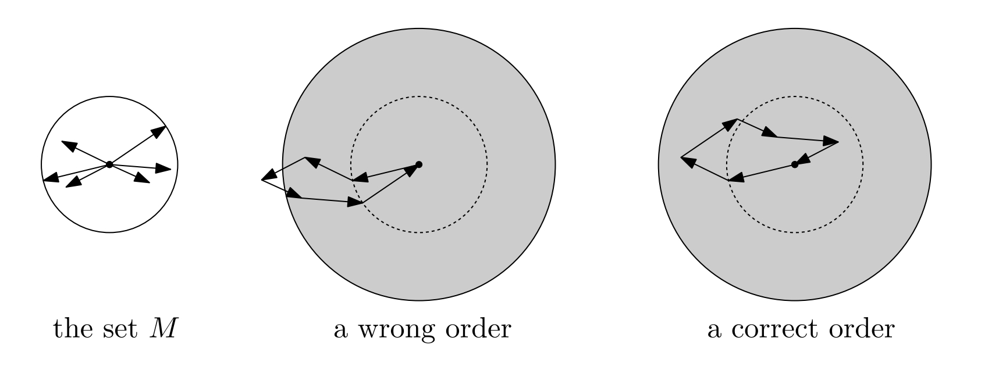

You have a set \( M \) consisting of \( n \) vectors in a \( d \)-dimensional space. Each vector has a length of at most 1. When you add all these vectors together, they sum to zero.
You want to arrange these vectors in a sequence (\( v_1, v_2, ..., v_n \)) so that as you add them up one by one, the length of the resulting sum never exceeds \( d \).
Imagine walking in a yard, and each vector represents a step you take. The goal is to ensure that at no point does your total distance from the start exceed a certain limit, which is \( d \) in this case.
The theorem states that it is always possible to find such an order for any set \( M \).
Key Concept: A "good" set of vectors is one where you can find a special combination of the vectors that sums to zero and meets certain criteria. If a set is "good," its total length when summed up is at most \( d \).
Main Idea: If you have more than \( d \) vectors in a "good" set, you can always remove one vector and still have a "good" set. This allows you to reduce the problem step by step.
Lemma: If you have a system of linear equations with a solution in the range [0, 1], you can find another solution where most variables are either 0 or 1.
Inductive Proof:
By carefully choosing which vector to remove, you ensure that the sum of the vectors at any stage does not exceed \( d \).
This method guarantees that for any finite set of vectors, you can find a sequence that keeps the total length of summed vectors within a certain limit at every step.